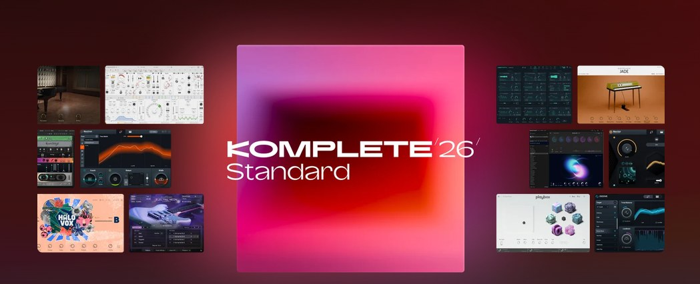
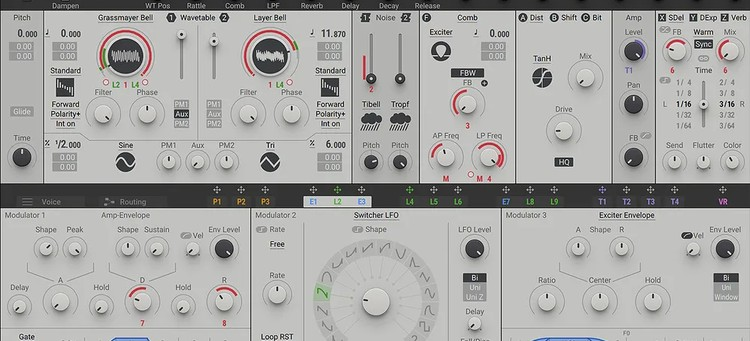
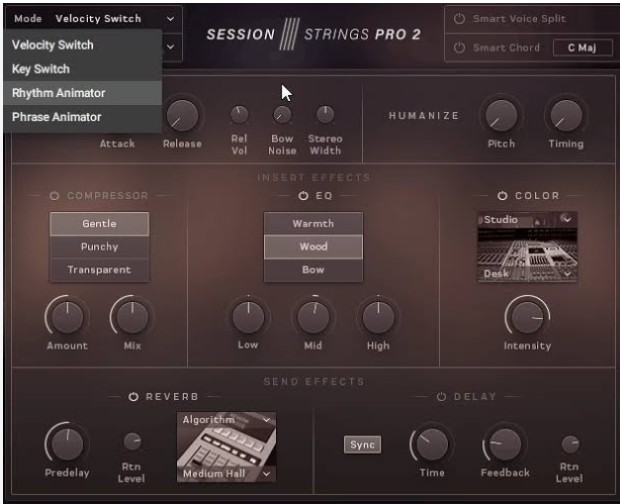
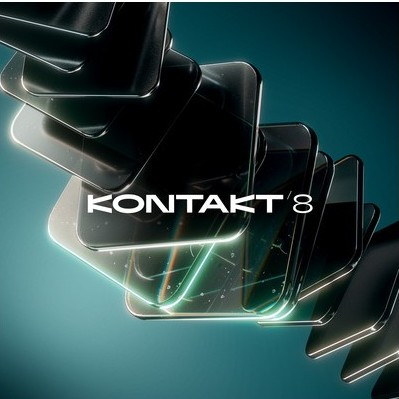
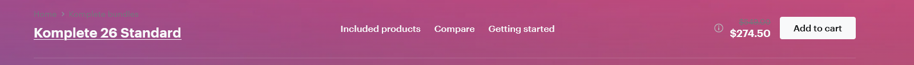
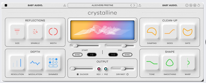

Komplete 26과
Crystalline
합계 할인가$280.00
Crystalline 할인 종료12.09
곡 작업에 쓸 악기 묶음과 리버브 효과를 함께 구매하려고 합니다2026.11.21 판매 페이지 기준
컴퓨터로 음악을 만들 때는 작업 프로그램 하나에, 그 안에 끼워 쓰는 악기와 효과 도구를 추가로 설치해서 씁니다.
지금 쓰고 있는 작업 프로그램만으로는 쓸 수 있는 악기 소리와 효과가 한정되어 있습니다. 이번에 사려는 두 가지는 모두 이 작업 프로그램 안에 끼워 쓰는 도구입니다.

Native Instruments는 1996년 독일 베를린에서 시작한 음악 소프트웨어·장비 회사입니다. 이 회사의 대표 상품이 악기와 효과를 묶은 Komplete이고, 이번에 사려는 것은 그 중간 등급인 Standard입니다.
Massive X, Guitar Rig 7 Pro, Absynth 6 등 신디사이저, 드럼, 효과가 함께 들어 있습니다.

굵은 베이스와 날카로운 리드 소리를 만드는 신디사이저입니다. 지금 연습하고 있는 전자음악 베이스 소리를 만드는 데 바로 씁니다.

실제 연주자의 기타·타악기 연주를 녹음해 둔 악기입니다. 직접 칠 수 없는 악기 파트도 곡에 자연스럽게 넣을 수 있습니다.

녹음된 악기 소리를 불러와 연주하는 프로그램입니다. 다른 회사의 악기 중에도 정품 Kontakt가 있어야만 열리는 것이 많습니다.

소리에 공간의 울림을 더하는 효과입니다. 작은 방부터 큰 공연장까지, 소리를 원하는 공간에 옮겨 놓는 도구입니다.

2026년 11월 21일 판매 페이지 화면 기준입니다. 할인은 기간이 정해져 있어서 가격이 바뀔 수 있습니다.